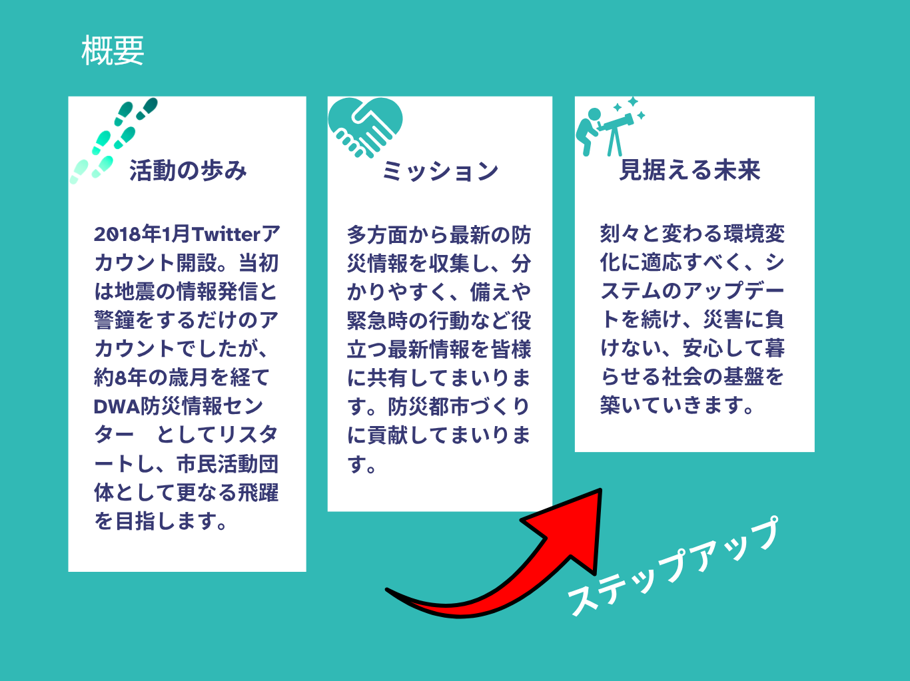
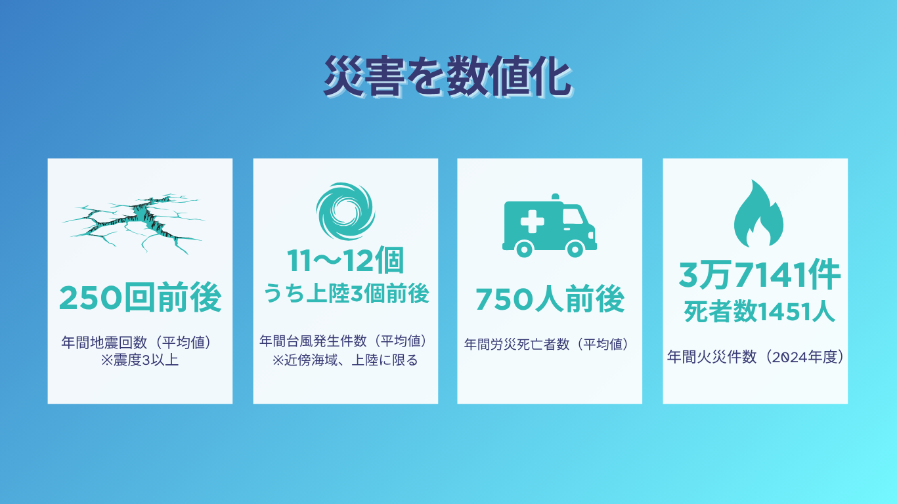
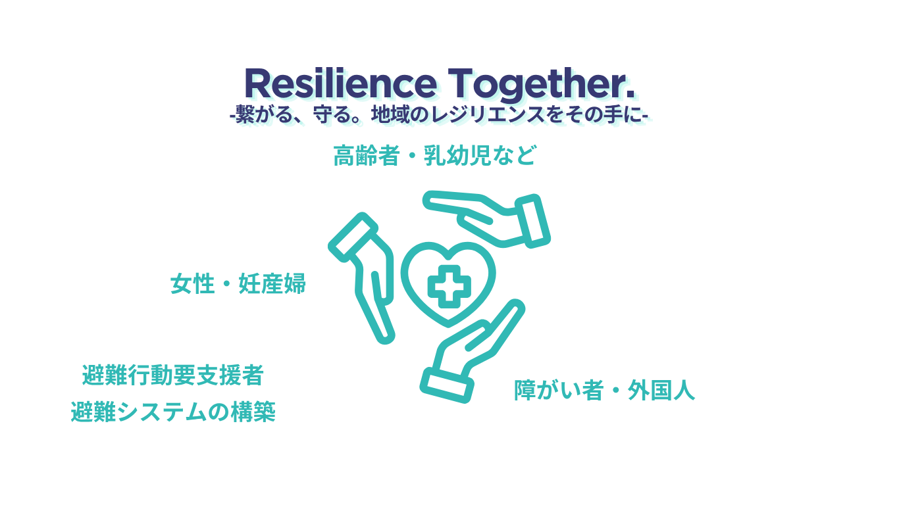

メッセージ
近年、自然災害の規模が大きくなり、激甚化しつつあります。原因は気候変動、温室効果ガスの増加であると指摘されています。また、太陽活動や地球の自転軸の変動など、様々な要因により自然災害の規模や性質が複雑化しています。
私たちに今できること。それが「備え」です。自宅備蓄、避難袋の備え、生活水の備蓄、ハザードマップの再点検、避難所経路のシミュレーション、家族との連絡手段の確立、防災アプリの導入やSNSでの情報収集、電源の確保など、できることは沢山あります。
「一人はみんなのために、みんなは一人のために」
― One for all, All for one ―
この言葉を胸に、一緒に長岡京市に防災の輪を広めていきましょう。



2030年 誰も取りこぼさない防災社会の実現へ
「発信」から「実装」へ。現在運用中の防災サイトと支援ツールは、行政の手が届きにくい「発災直後の空白の時間」を埋めるためのものです。
特に喫緊の課題である避難行動要支援者の個別避難計画については、支援の目途が立っていない方が大半です。自治体や消防と緊密に連携し、デジタル技術を駆使して「誰が、どこで、誰を助けるか」を可視化するシステム構築を目指します。
一人ひとりが確実な支援を受けられるレジリエンス（回復力）の高い社会を、共につくり上げていきましょう。